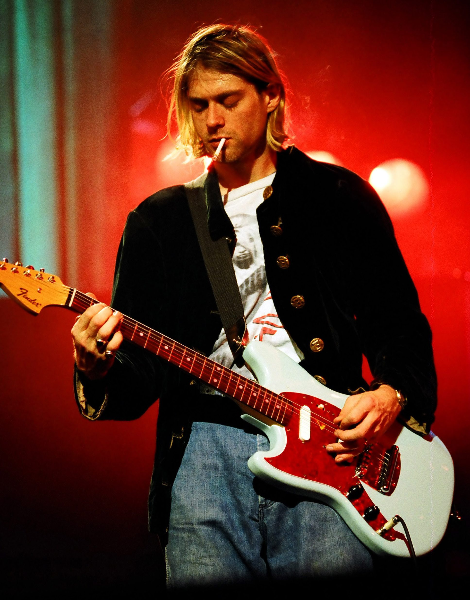

Kurt Cobain
Come as you are

Kurt is playing his favorite fender guitar
Some info about Kurt's life
- Kurt Cobain was born on February 20, 1967 in Grays Harbor County Hospital in Aberdeen, Washington.
- In 1976 his parents divorced after 11 years of marriage.
- Later in 1985, Cobain formed his first band "Fecal Matter", with Dale Crover, Greg Hokanson, Buzz Osborne, and Mike Dillard.
- Cobain struggled to reconcile the massive success of Nirvana to his underground roots. He also felt persecuted by the media, comparing himself to Frances Farmer.
- In 1991, Cobain met Courtney Love in a club where the two found a shared sense of punk rock romance, tussling on the floor.
- In 1985, Cobain was arrested for spray painting the words "God is gay" on the alley side of a bank building in his hometown of Aberdeen, WA.